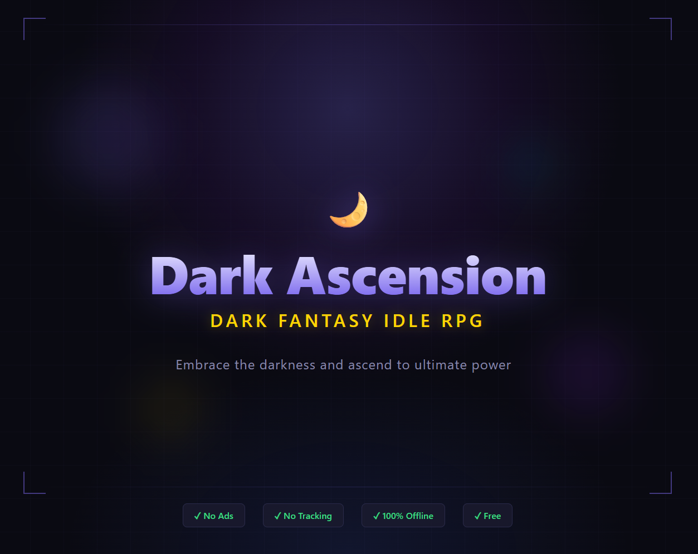

Our Games
Two Worlds, One Dark Universe
Both games share the same dark fantasy lore, spells, artifacts, and enemies — reimagined across two distinct genres.

Available Now
Dark Ascension
Idle RPG / Incremental
Ascend through 12 stages of dark power. Command minions, cast devastating spells, collect ancient artifacts, and transcend reality itself. A deep idle RPG with prestige layers, automation, synergies, and hundreds of hours of progression.

In Development
Thelsicker Ascends
Dark Fantasy Metroidvania
When the town of Thornhaven breaks apart, a hooded mage named Thelsicker falls into the darkness beneath. Armed only with a sword, explore 12 interconnected zones, defeat powerful bosses, and awaken devastating dark spells to find a way back to the surface.